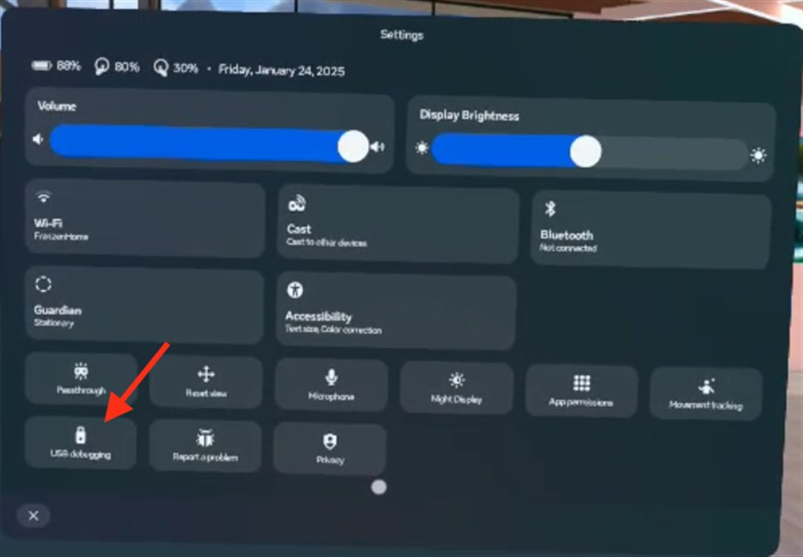
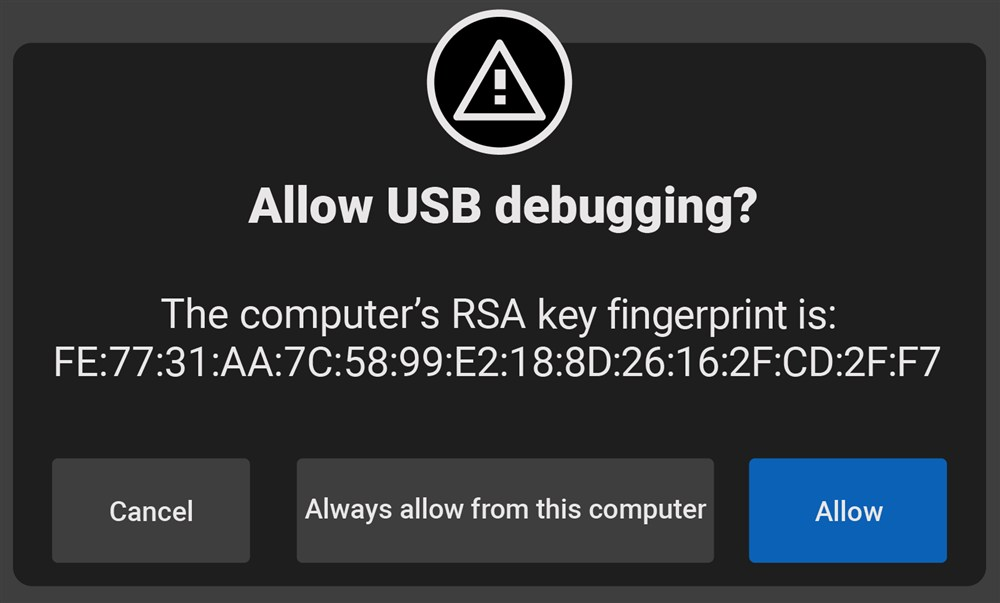

Use this when Ace stays stuck on Meta's three loading dots after Device Manager installed it.
Plug the headset into this computer with a USB cable, make sure the headset is switched on, then click the button
and pick the headset in the list that pops up. If the headset needs something from you, instructions appear below.
Before you start: USB debugging has to be switched on in the headset.
How to turn on USB debugging
Connect and fix my headset
Results will appear here.
How to turn on USB debugging
Takes about a minute. You do this in the headset, so put it on. The headset forgets this setting every time it
restarts, so if the page can't find your headset later, check it again.
Open the Meta menu
Press the Meta button on the right controller (the flat oval button) to open the menu.
Open Settings
Select the three dots (⋮) on the toolbar, then Settings in the top-right corner.
On some headsets the toolbar shows a gear icon labelled Settings instead; select that.
Go to Developer
In the list on the left side of the Settings window, scroll down and select Developer .
Switch USB Debugging on
Turn the USB Debugging switch on. It turns green when it is on.
You can also get there from the quick settings panel (the Wi-Fi and battery icons in the bottom-left of the
menu), which has a USB debugging tile.

The quick settings panel. The USB debugging tile is in the bottom-left.
Plug in and allow the computer
Plug the headset into this computer with a USB cable, then click Connect and fix my headset on this page.
The headset shows Allow USB debugging? Tick Always allow from this computer and select Allow .
This box only appears while you are wearing the headset.

Tick "Always allow from this computer", then "Allow".
Screenshots courtesy of ArborXR's guide .
The steps follow ManageXR's guide for shared-mode headsets.
Settings > Developer > USB Debugging
Close
Why does this happen?
Prefer an app?
Download the Windows app (about 65 MB). It does the same fix without a browser.
Windows shows "Windows protected your PC" the first time; click More info , then Run anyway .
Ace Headset Fix (web) 1.1.0
Close